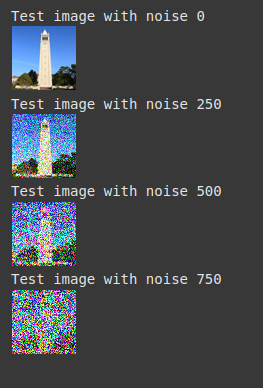
To start, we define a forward function adding random noise to an input image. Here are the results of this function applied to a 64x64 image of the Campenille.
The amount of noise for each pixel is sampled from a normal distribution with mean 0
and standard deviation 1, and scaled according to a factor t such that high t represents high noise.
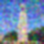
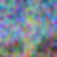
One traditional way of removing high-frequency noise like the noise from forward() is to apply a Gaussian Filter. The results of Gaussian filtering with kernel
size 13x13 and sigma = 1.7 are shown above. This method of removing noise allows us to make out what is in the image for noise = 250 and noise = 500, but not 750.
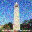
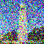
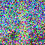
Using the DeepFloyd model, we can achieve more clear denoised images. Above are the before and after pictures when we provide the DeepFloyd model knowledge of
how much noise is in the input image. The more noise that there is in the input image, the further from the original image the output of the DeepFloyd model is.
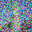
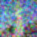
Implementing iterative denoising (step by step with stride 10) gives us the following output. The ooutputs of iterative denoising are less blurry than the one-step denoised image,
but they also differ structurally much more from the original non-noised image.
Using the iterative denoising technique with pure noise results in the above outputs. Many images output by this technique are unfocused and ambiguous.
Using the Classifier Free Guidance denoising technique with pure noise results in the above outputs. These images are much more guided than those generated with
only iterative denoising.

Using the Classifier Free Guidance denoising technique with the starting point of the Campenille and the prompt "rocket" gives the above output. One interesting thing
to note is the inconsistency between related and different output: image 3 had more noise but outputs an image closer to the original than image 4!
If we restrict the noised region with a mask, but include the entire image in the denoising process, setting the non-masked regions to be the original values,
we can create new versions of the original images. My favorite images here are images 4 and 5 : we can see that the model has imagined the Campenille as a castle
and as a woman in a dress respectively!
 In these images, we provide the guidance prompt "rocket" when denoising, and get a gradient images from pure rocket to pure campenille, from attempting to denoise a noised version
of the Campenille with "rocket" guidance!
In these images, we provide the guidance prompt "rocket" when denoising, and get a gradient images from pure rocket to pure campenille, from attempting to denoise a noised version
of the Campenille with "rocket" guidance!
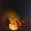

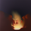
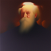
Denoising normal and flipped versions of noise gives us these visual anagrams which look like "oil painting of people around a campfire" in one direction and "oil painting of a man" in the other!